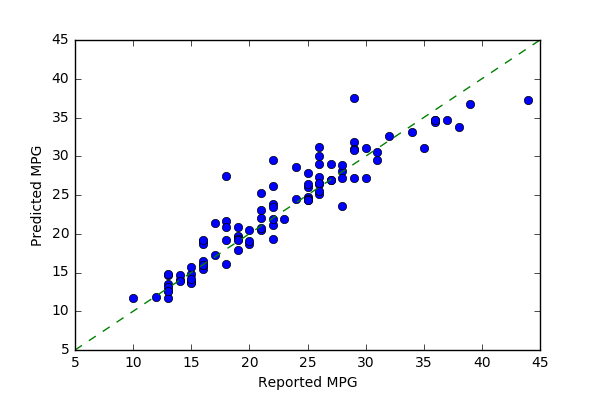
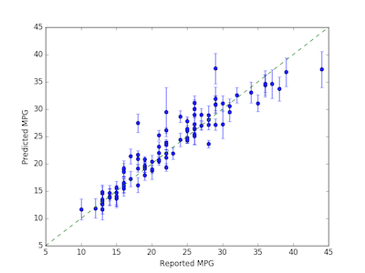
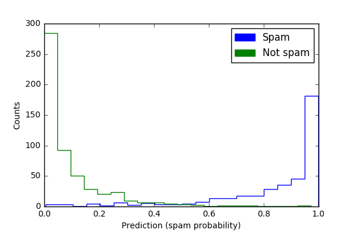
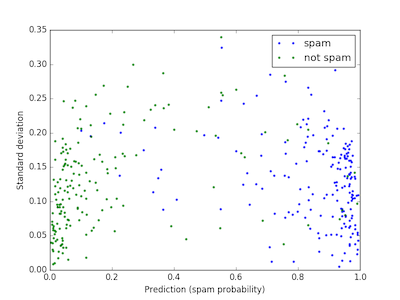

Developed with Ariel Rokem and Bryna Hazelton from eScience Institute, University of Washington
Random forests are a method for predicting numerous ensemble learning tasks. Prediction variability can illustrate how influential the training set is for producing the observed random forest predictions and provides additional information about prediction accuracy. forest-confidence-interval is a Python module for calculating variance and adding confidence intervals to scikit-learn random forest regression or classification objects. The core functions calculate an in-bag and error bars for random forest objects. Our software is designed for individuals using scikit-learn random forest objects that want to add estimates of uncertainty to random forest predictors. This module is an implementation of an algorithm developed by Wager 2014 and previously implemented in R (Wager 2016).
Our package's random_forest_error and calc_inbag functions use the random forest object (including training and test data) to create variance estimates that can be plotted (e.g. as confidence intervals or standard deviations). The in-bag matrix that fit the data is set to None by default, and the in-bag will be inferred from the forest. However, this only works for trees for which bootstrapping was set to True. That is, if sampling was done with replacement. Otherwise, users need to provide their own in-bag matrix.
The regression example uses a slightly modified data-set from the Carnegie Mellon University's StatLib library (available from the UC Irvine Machine Learning Repository) with features of different cars and their MPG (Quinlan 1993). The classification example generates synthetic data to simulate a task like that of a spam filter: classifying items into one of two categories (e.g., spam/non-spam) based on a number of features. This module will work for matrices or pandas data frames. Then, scikit-learn functions split the example data into training and test data and generate a random forest object (regression or classifier). The examples calculate variance from random forest objects that use the highest mean probability estimate across the trees. The focus on means for estimates and unit comparability between sample mean and dispersion measures is the basis for plotting with the square root of the variance (standard deviation). As the plots with variance estimated show, some predictions have more error than others. For instance, in the regression (MPG) example, predictions of higher mileage MPG are associated with greater variance than lower mileage predictions.




Contributions are very welcome, but we ask that contributors abide by the contributor covenant.
To report issues with the software, please post to the issue log Bug reports are also appreciated, please add them to the issue log after verifying that the issue does not already exist. Comments on existing issues are also welcome.
Please submit improvements as pull requests against the repo after verifying that the existing tests pass and any new code is well covered by unit tests. Please write code that complies with the Python style guide PEP8
Please e-mail Ariel Rokem, Kivan Polimis, or Bryna Hazelton if you have any questions, suggestions or feedback.
Quinlan, J. Ross. 1993. “Combining Instance-Based and Model-Based Learning.” In Proceedings of the Tenth International Conference on International Conference on Machine Learning, 236–43. ICML’93. San Francisco, CA, USA: Morgan Kaufmann Publishers Inc. http://dl.acm.org/citation.cfm?id=3091529.3091560
Wager, Stefan. 2016. "randomForestCI". randomForestCI GitHub Package Repository
Wager, Stefan, Trevor Hastie, and Bradley Efron. 2014. "Confidence Intervals for Random Forests: The Jackknife and the Infinitesimal Jackknife".The Journal of Machine Learning Research 15 (1): 1625-51.
 Kivan Polimis
Kivan Polimis